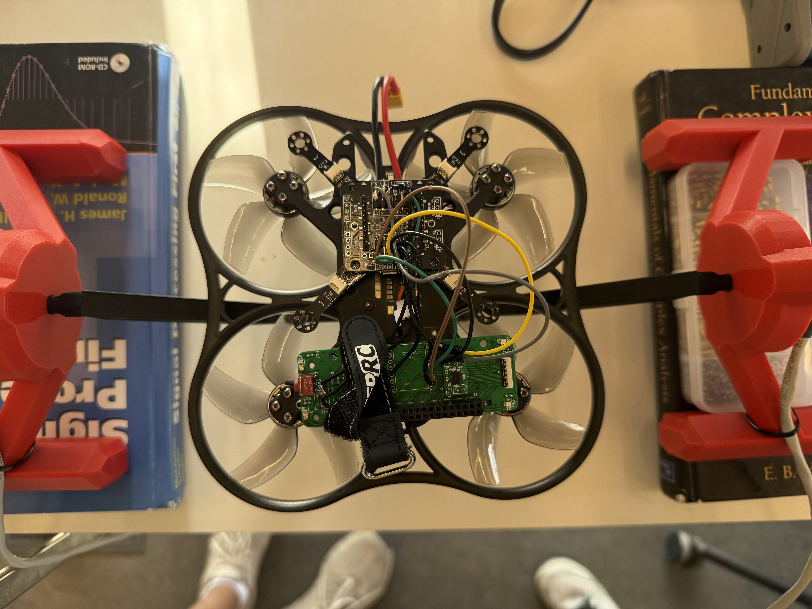

Senior Design

MicroCART is a long-standing senior design project associated with CPRE 488, an embedded systems class centered around quadcopter development. Our team took on a full redesign of a previous team's Crazyflie-based quadcopter, addressing hardware reliability issues and expanding the drone's autonomous capabilities through the integration of a computer vision system.
As software lead, I am responsible for designing and implementing the computer vision capabilities running on a Raspberry Pi Zero 2W mounted to the drone. This includes ArUco marker detection using OpenCV, pose estimation relative to a landing target, and communicating flight commands to the Crazyflie flight controller over UART.
Working on MicroCART has developed my skills in embedded firmware development, real-time computer vision with OpenCV, hardware/software communication protocols, and the challenges of deploying software on resource-constrained hardware. I have also gained experience coordinating software requirements with hardware constraints as this is a multi-faceted engineering project.
MicroCART contributes to an ongoing effort to build a robust, extensible quadcopter platform for future CPRE 488 students and advance possible research capabilities in the future. By adding onboard computer vision for autonomous landing, our team reduces the drone's dependence on external sensors or ground-based systems, making the platform more self-sufficient and laying a foundation for future teams to expand upon.